<ion-content>
    <div class="background-default h-100 container">
        <p class="horario">
            <b>Horário</b>
            <br>
            Sexta-feira 20:20 - 22:00
        </p>

        <p class="local">
            <b>Local</b>
            <br>
            Sala 227
        </p>

        <p class="unidade-1">
            <b> Teoria da Informação</b>
            <br>
            1. Potenciação
            2. Taxa de Amostragem
            3. Quantização
            4. Filtros (passa baixa, passa alta e passa faixa)
        </p>

        <p class="unidade-2">
            <b> Conceitos de Sistemas Multimídia</b>
            <br>
            5. Mídia
            6. Multimídia
            7. Sistemas Multimídia
            8. Hardware
            9. Tipos de PLataforma
            10. Tipos de Software
        </p>

        <footer>
            
        </footer>
    </div>
</ion-content>